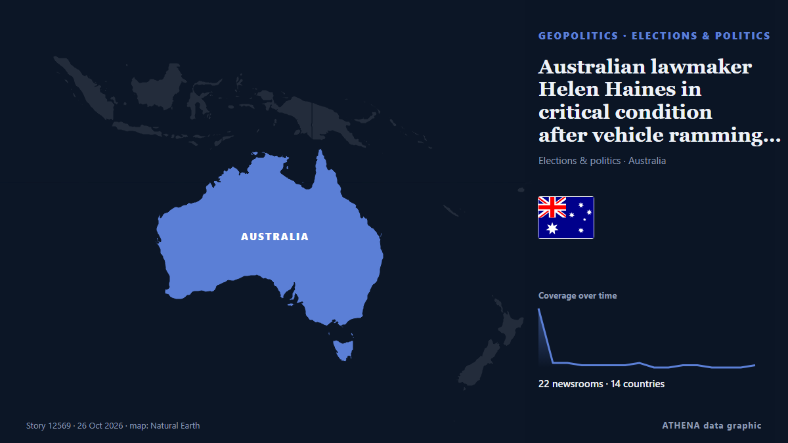

Australian lawmaker Helen Haines in critical condition after vehicle ramming attack

Australian MP Helen Haines was critically injured after being struck by a car outside her office. from The Jerusalem Post
Reported independently by 22 outlets in 14 countries since 19 Oct, first by ABC News Australia; coverage is fading. ATHENA rates the risk high (6.1/10), driven mainly by the severity of the harm described and its geographic and sector reach. Confidence is 87% (high), with 22 independent outlets corroborating it and an average source reliability of 76%. Newsrooms by country: Australia (11), United Kingdom (8), United States (7). Coverage: 19 Oct to 26 Oct, 181 hours.
Why it matters: Security and diplomatic developments can shift alliances, trade and markets well beyond the countries directly involved.
What changed: 1 new report in the 24 hours to 26 Oct.
At a glance
Selected, scored and written by ATHENA's published methodology. No editor intervenes in individual events. How this is produced ›
| 19 Oct 07:06 UTC | 26 |
|---|---|
| 19 Oct 19:06 UTC | 2 |
| 20 Oct 07:06 UTC | 2 |
| 20 Oct 19:06 UTC | 1 |
| 21 Oct 07:06 UTC | 1 |
| 21 Oct 19:06 UTC | 1 |
| 22 Oct 07:06 UTC | 1 |
| 22 Oct 19:06 UTC | 2 |
| 23 Oct 07:06 UTC | 0 |
| 23 Oct 19:06 UTC | 0 |
| 24 Oct 07:06 UTC | 1 |
| 24 Oct 19:06 UTC | 1 |
| 25 Oct 07:06 UTC | 0 |
| 25 Oct 19:06 UTC | 0 |
| 26 Oct 07:06 UTC | 0 |
| 26 Oct 19:06 UTC | 1 |
| 19 Oct 15:50 UTC | 6.2 |
|---|---|
| 19 Oct 15:51 UTC | 6.8 |
| 19 Oct 18:58 UTC | 6.2 |
| 26 Oct 20:06 UTC | 6.1 |
Why these numbers
Importance
Risk
Confidence
The reporting — who reported it, and when
headline as published · opens the original- ABC News Australia · Australia'This wasn't an accident': Helen Haines hit by car outside electorate office
- ABC News Australia · AustraliaIndi MP Helen Haines critically injured after 'attack' at electorate office — as it happened
- SBS News · AustraliaPM says suspect in custody after MP Helen Haines allegedly 'attacked' outside office
- Greek City Times · GreeceIndependent MP Helen Haines critically injured after being struck by vehicle in Wangaratta
- Stuff · New ZealandAustralian MP critical after ‘attack’, counterterror police investigate
- Arab Times · KuwaitPolice say a car hit Australian lawmaker, critically injuring her; driver arrested
- RTÉ News · IrelandAustralian MP Haines critical after vehicle attack
- Euronews English · FranceAustralian MP Helen Haines 'critically' hurt in car ramming attack, officials say
- DW English · GermanyAustralian MP seriously hurt in suspected car attack
- CBC News · CanadaAustralian MP Helen Haines in critical condition after deliberate vehicle attack, prime minister says
- The Guardian · United KingdomPremier ‘deeply appalled’ after Indi MP Haines injured – as it happened
- ABC News Australia · AustraliaWhat we know about the 'attack' on Helen Haines
- The Guardian · United Kingdom‘Deeply appalled’: politicians condemn alleged attack after independent MP Helen Haines critically injured
- NPR · United StatesAustralian prime minister says lawmaker critically injured by car is 'no accident'
- PBS NewsHour · United StatesAustralian lawmaker critically injured by car is 'no accident,' prime minister says
- The New York Times (World) · United StatesAustralian Lawmaker Helen Haines Injured After Attack, Prime Minister Says
- The Jerusalem Post · IsraelAustralian lawmaker Helen Haines in critical condition after vehicle ramming attack
- Times of India · India'Not accident': Australian PM says MP Helen Haines was hit in 'deliberate act'
- ABC News (International) · United StatesAustralian prime minister says lawmaker critically injured by car is 'no accident'
- Al Jazeera English · QatarAustralian Member of Parliament critically injured after being hit by a car
- BBC News · United KingdomAustralian MP critically injured after being hit by car in apparent attack
- The Independent · United KingdomWho is Helen Haines? Australian MP in critical condition after car attack
- The Independent · United KingdomAustralian MP in critical condition after ‘attack’ outside office
- Bangkok Post — page reader · ThailandAustralian lawmaker critically hurt in 'deliberate attack'
- BBC News · United KingdomWarning signs over threats to Australian politicians were rising before MP hit by car
- ABC News Australia · AustraliaLive: Helen Haines remains critical as police investigation continues after 'attack'
- The Guardian · United KingdomHelen Haines: independent MP in critical condition in Melbourne’s Alfred hospital after being struck by car in Wangaratta – follow updates
- Euronews English · FranceAustralia police say man charged after lawmaker Helen Haines deliberately hit by car
- NBC News (World) · United StatesLawmaker reportedly loses leg as car ramming stuns Australia
- The New York Times (World) · United StatesAustralian Lawmaker Helen Haines Remains in Critical Condition After Car Attack
- SBS News · AustraliaCouple that treated Helen Haines reveal injured politician's kind words to them
- The New York Times (World) · United StatesAustralian Politicians Were Already on Edge Before One of Their Own Was Attacked
- ABC News Australia · AustraliaHelen Haines remains critical, three days after car attack
- ABC News Australia · AustraliaHelen Haines pressed PM on regional health days before car attack
- RNZ National · New ZealandMarama Davidson says attack on Australian MP Helen Haines a chilling warning
- ABC News Australia · AustraliaAustralians light candles for critically injured Helen Haines
- The Independent · United KingdomAustralian MP Helen Haines no longer in critical condition after alleged attack
- SBS News · AustraliaAFP chief addresses mental health concerns after alleged attack on Helen Haines
- ABC News Australia · AustraliaLive: Department rejects PM's claim golf club grant was to fix sewerage issue